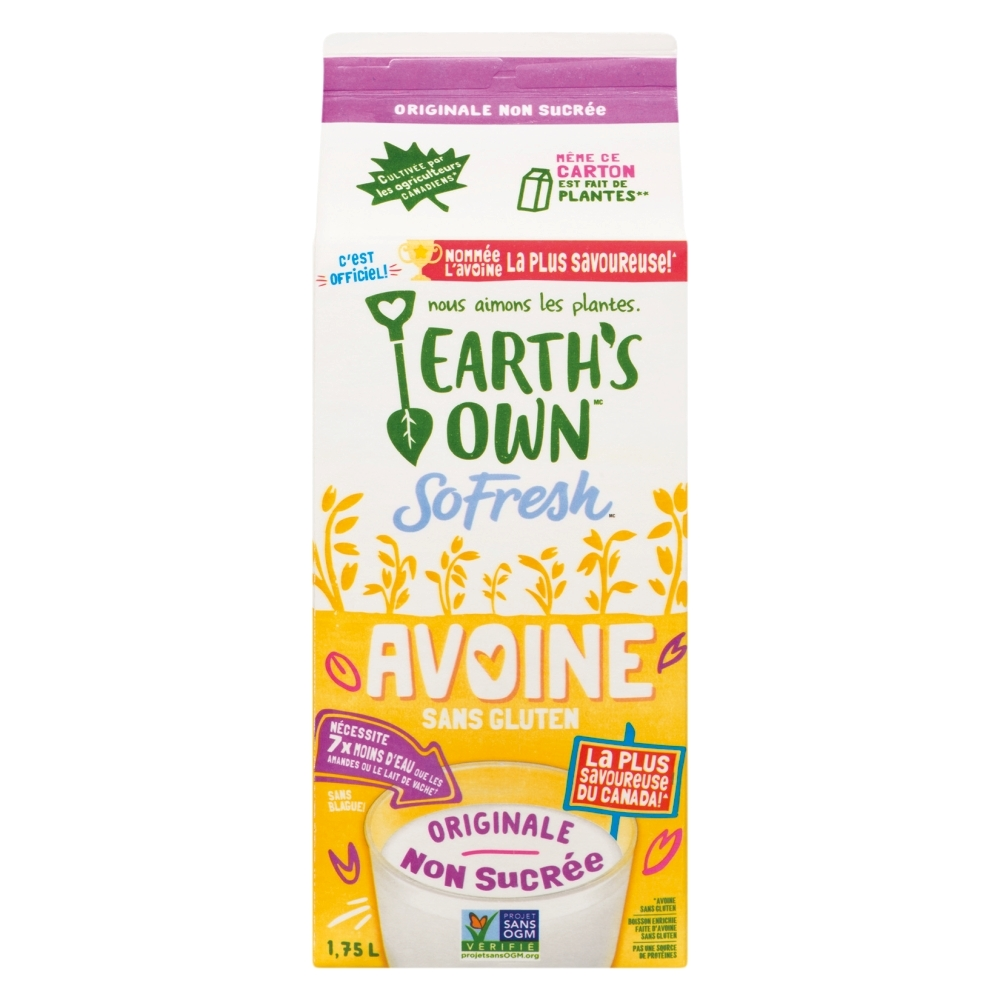
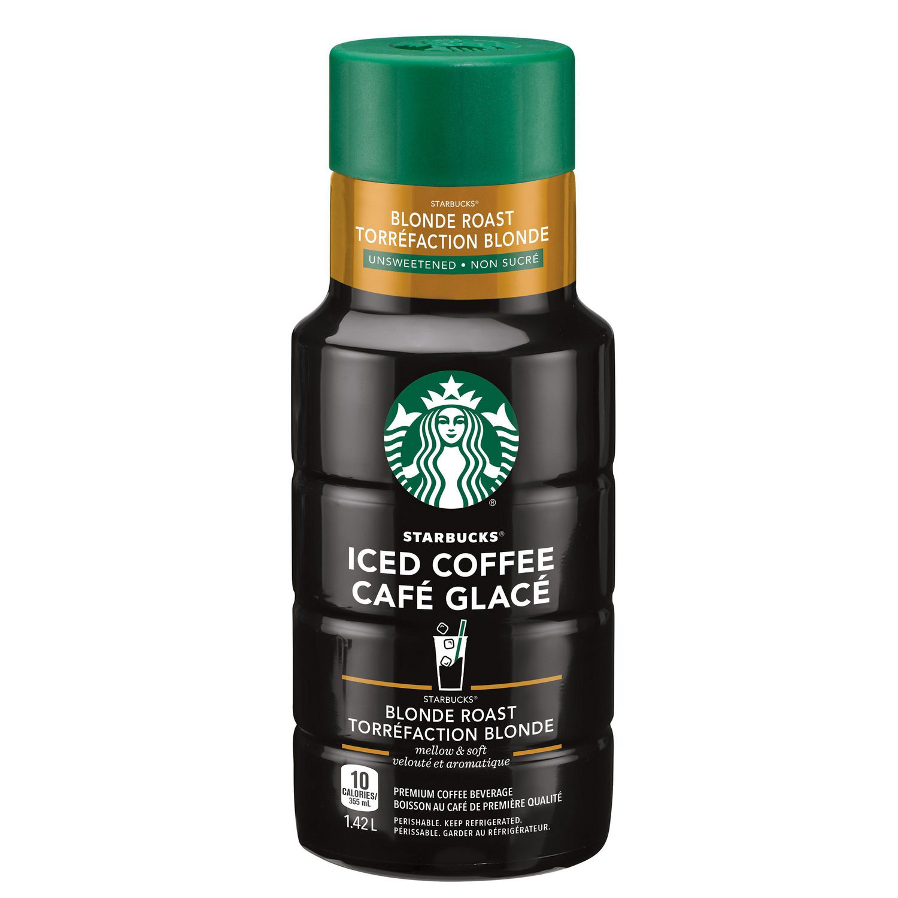

Je préfère aller au Superstore, mais puisque le Sobeys est plus près de chez moi, je m'y rends à pieds.
J'apporte mes sacs réutilisables, parce que j'essaie de sauver la planète du mieux que je peux.
Rendue au Sobeys, je mets mon masque et je suis prête pour magasiner.
 